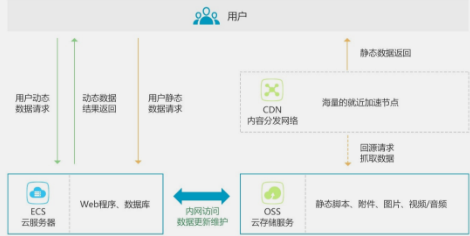

一、CDN 的基本原理和基础架构
CDN 是将源站内容分发至最接近用户的节点，使用户可就近取得所需内容，提高用户访问 的响应速度和成功率。解决因分布、带宽、服务器性能带来的访问延迟问题，适用于站点 加速、点播、直播等场景。
最简单的 CDN 网络由一个 DNS 服务器和几台缓存服务器组成：
1.当用户点击网站页面上的内容 URL，经过本地 DNS 系统解析，DNS 系统会最终将域 名的解析权交给 CNAME 指向的 CDN 专用 DNS 服务器。
2.CDN 的 DNS 服务器将 CDN 的全局负载均衡设备 IP 地址返回用户。
3.用户向 CDN 的全局负载均衡设备发起内容 URL 访问请求。
4.CDN 全局负载均衡设备根据用户 IP 地址，以及用户请求的内容 URL，选择一台用户 所属区域的区域负载均衡设备，告诉用户向这台设备发起请求。
5.区域负载均衡设备会为用户选择一台合适的缓存服务器提供服务，选择的依据包 括：根据用户 IP 地址，判断哪一台服务器距用户最近；根据用户所请求的 URL 中 携带的内容名称，判断哪一台服务器上有用户所需内容；查询各个服务器当前的负 载情况，判断哪一台服务器尚有服务能力。基于以上这些条件的综合分析之后，区 域负载均衡设备会向全局负载均衡设备返回一台缓存服务器的 IP 地址。
6.全局负载均衡设备把服务器的 IP 地址返回给用户。
7.用户向缓存服务器发起请求，缓存服务器响应用户请求，将用户所需内容传送到用 户终端。如果这台缓存服务器上并没有用户想要的内容，而区域均衡设备依然将它 分配给了用户，那么这台服务器就要向它的上一级缓存服务器请求内容，直至追溯 到网站的源服务器将内容拉到本地。
CDN 关键组件
• LVS 做四层均衡负载
DR 模式 双 LVS 做 Active-Active 互备 负载均衡算法采用 wrr
• Tengine 做七层负载均衡
阿里基于 Nginx 开发的高性能 HTTP 服务器，已经开源。 主动健康检查 SPDY v3 支持
• Swift 做 HTTP 缓存
高性能 Cache 磁盘（SSD/SATA）
二、为什么要使用 CDN？或者说 CDN 能解决什么问题？
如果你在经营一家网站，那你应该知道几点因素是你制胜的关键：
•内容有吸引力
•访问速度快
•支持频繁的用户互动
•可以在各处浏览无障碍
另外，你的网站必须能在复杂的网络环境下运行，考虑到全球的用户访问体验。你的网站 也会随着使用越来越多的对象（如图片、帧、CSS 及 APIs）和形形色色的动作（分享、跟 踪）而系统逐渐庞大。所以，系统变慢带来用户的流失。
Google 及其它网站的研究表明，一个网站每慢一秒钟，就会丢失许多访客，甚至这些访 客永远不会再次光顾这些网站。可以想像，如果网站是你的盈利渠道或是品牌窗口，那么 网站速度慢将是一个致命的打击。
这就是你使用 CDN 的第一个也是最重要的原因：**为了加速网站的访问**
除此之外，CDN 还有一些作用：
1. 为了实现跨运营商、跨地域的全网覆盖
互联不互通、区域 ISP 地域局限、出口带宽受限制等种种因素都造成了网站的区域性无法 访问。CDN 加速可以覆盖全球的线路，通过和运营商合作，部署 IDC 资源，在全国骨干节 点商，合理部署 CDN 边缘分发存储节点，充分利用带宽资源，平衡源站流量。阿里云在国 内有 500+节点，海外 300+节点，覆盖主流国家和地区不是问题，可以确保 CDN 服务的稳 定和快速。
2. 为了保障你的网站安全
CDN 的负载均衡和分布式存储技术，可以加强网站的可靠性，相当无无形中给你的网站添 加了一把保护伞，应对绝大部分的互联网攻击事件。防攻击系统也能避免网站遭到恶意攻 击。
3. 为了异地备援
当某个服务器发生意外故障时，系统将会调用其他临近的健康服务器节点进行服务，进而 提供接近 100%的可靠性，这就让你的网站可以做到永不宕机。
4. 为了节约成本投入
使用 CDN 加速可以实现网站的全国铺设，你根据不用考虑购买服务器与后续的托管运维， 服务器之间镜像同步，也不用为了管理维护技术人员而烦恼，节省了人力、精力和财力。
5. 为了让你更专注业务本身
CDN 加速厂商一般都会提供一站式服务，业务不仅限于 CDN，还有配套的云存储、大数据 服务、视频云服务等，而且一般会提供 7x24 运维监控支持，保证网络随时畅通，你可以 放心使用。并且将更多的精力投入到发展自身的核心业务之上。
三、CDN 适用哪些场景？
1、网站站点/应用加速
站点或者应用中大量静态资源的加速分发，建议将站点内容进行动静分离，动态文件可以 结合云服务器 ECS，静态资源如各类型图片、html、css、js 文件等，建议结合 对象存储 OSS 存储海量静态资源，可以有效加速内容加载速度，轻松搞定网站图片、短视频等内容 分发。
• 架构示意图

2、视音频点播/大文件下载分发加速
支持各类文件的下载、分发，支持在线点播加速业务，如 mp4、flv 视频文件或者平均单 个文件大小在 20M 以上，主要的业务场景是视音频点播、大文件下载（如安装包下载） 等，建议搭配对象存储 OSS 使用，可提升回源速度，节约近 2/3 回源带宽成本。
• 架构示意图
4、移动应用加速
移动 APP 更新文件（apk 文件）分发，移动 APP 内图片、页面、短视频、UGC 等内容的优 化加速分发。提供 httpDNS 服务，避免 DNS 劫持并获得实时精确的 DNS 解析结果，有效缩 短用户访问时间，提升用户体验。
• 架构示意图
评论